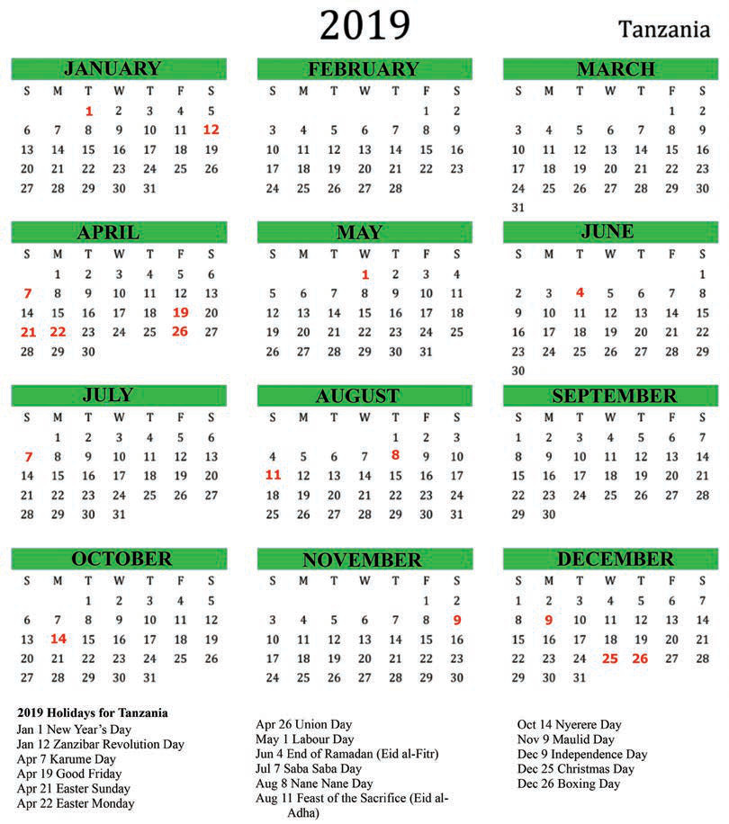

A calendar helps to identify two types of years: a short year and a leap year. A leap year is the year in which February has 29 days. A short year is the year in which February has 28 days.
The following are the calendars for the year, 2019 and 2020.
